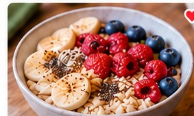
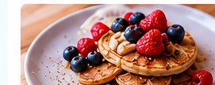
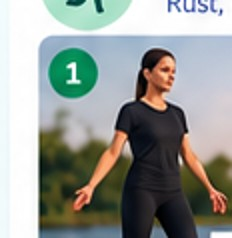
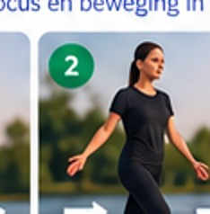
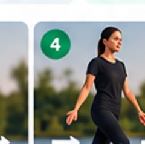

1.Kies je maaltijden
Kies van boven naar beneden. Na elke keuze laat de volgende lijst alleen maaltijden zien die nog binnen je calorie-doel passen.
2.Recept details

Havermout met appel
±390 kcalTik links op een maaltijd voor ingrediënten, grammages en bereiding.
3.Jouw caloriebehoefte
Automatisch op basis van jouw profiel.
4.Recept delen

Deel met familie
Alleen recept, ingrediënten en bereiding worden gedeeld. Geen persoonlijke gegevens.
5.Weekmenu samenstellen
De app bewaakt je caloriegrens en past je boodschappen aan.
6.Boodschappenlijst
7.Sport met instructies

1 HoudingRechtop, ontspannen.
2 StappenKlein en rustig.
4 AdemRustig in en uit.8.Ik heb iets anders gegeten
Voer in wat je echt at. De app herberekent direct de rest van je dag.
Weekmenu kiezen
Sport & uitleg
Eigen sport toevoegen
Mijn planning
Recepten
Eigen recept toevoegen
Per ingrediënt: hoeveelheid | eenheid | ingrediënt | kcal voor die hoeveelheid
Recept ontvangen
Je importeert alleen het recept. Geen andere gegevens van de maker.
Boodschappenlijst
Voortgang
Mijn profiel & caloriedoel
Schatting voor volwassenen op basis van Mifflin–St Jeor, activiteit en ~20% energietekort. Werkelijke behoefte kan afwijken.